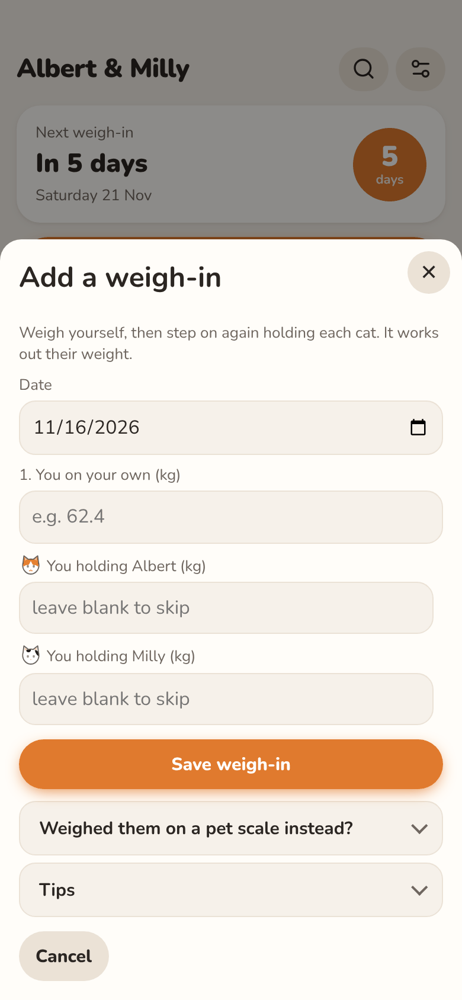

3. Every Saturday: weigh-in

Weigh yourself, then hold each cat
Tap Weigh now (or Weight › Add a weigh-in for both). Weigh yourself, then step on again holding each cat. The app subtracts and saves their weight.
- Got a pet scale? Use Weighed them on a pet scale instead?
- Weights can be shown in kg or lb (Settings › This phone).

See the progress
The Weight tab shows each cat's progress, a chart against a safe 1% a week, and when they'll reach the target at this pace.
- After each weigh-in a weekly check-in on Today says whether to keep the food the same or change it.
- Losing more than 1.5% a week is too fast: the app tells you to feed a bit more and ring the vet.